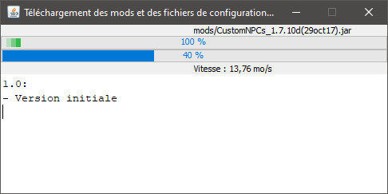
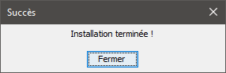
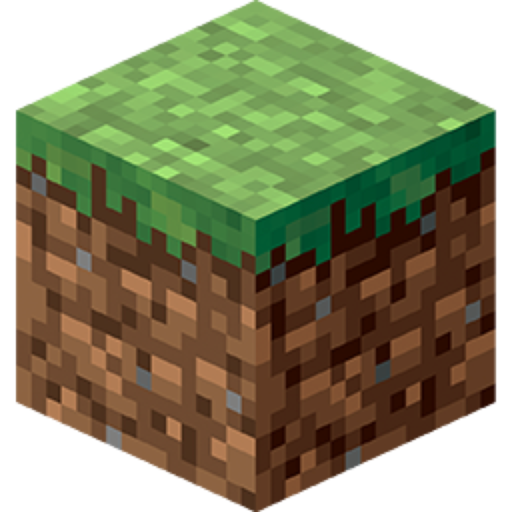
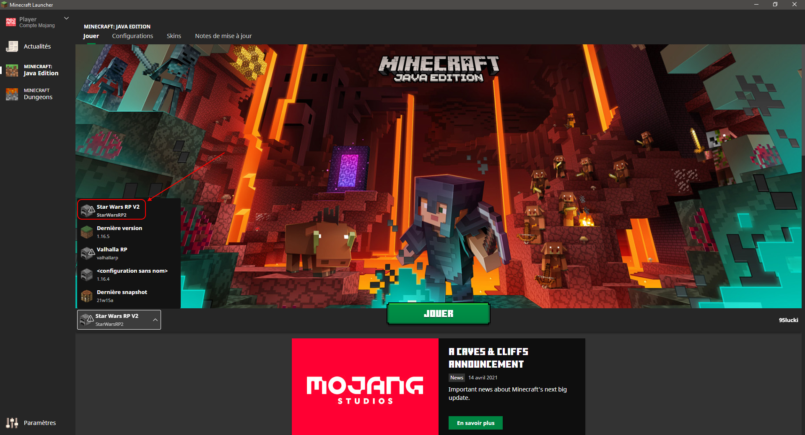

Guide d'installation de StarWarsRP
1. Télécharger l'installateur
2. Lancer StarWarsRPV2Installer-1.0.jar
Si jamais la fenêtre de l'installateur ne s'ouvre pas,
essayez d'exécuter jarfix puis réessayez
3. Clicker sur Installer 
4. Attendre la fin du téléchargement

Puis fermer la page

5. Ouvrir le launcher  Minecraft et sélectionnez Star Wars RP V2

Pour tout problème veuillez ouvrir un ticket sur #🔩┇support sur notre Discord